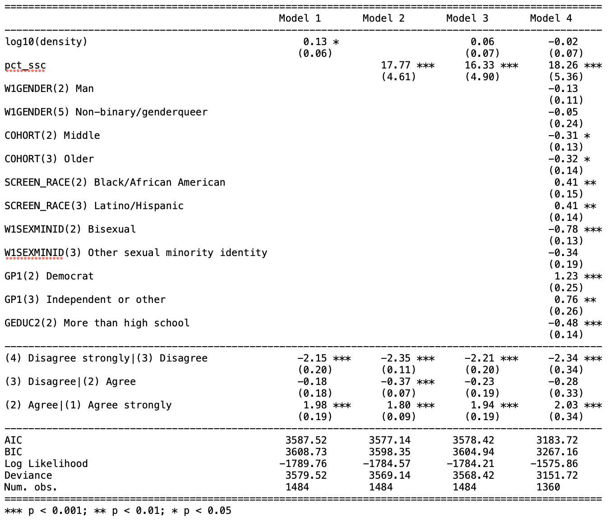
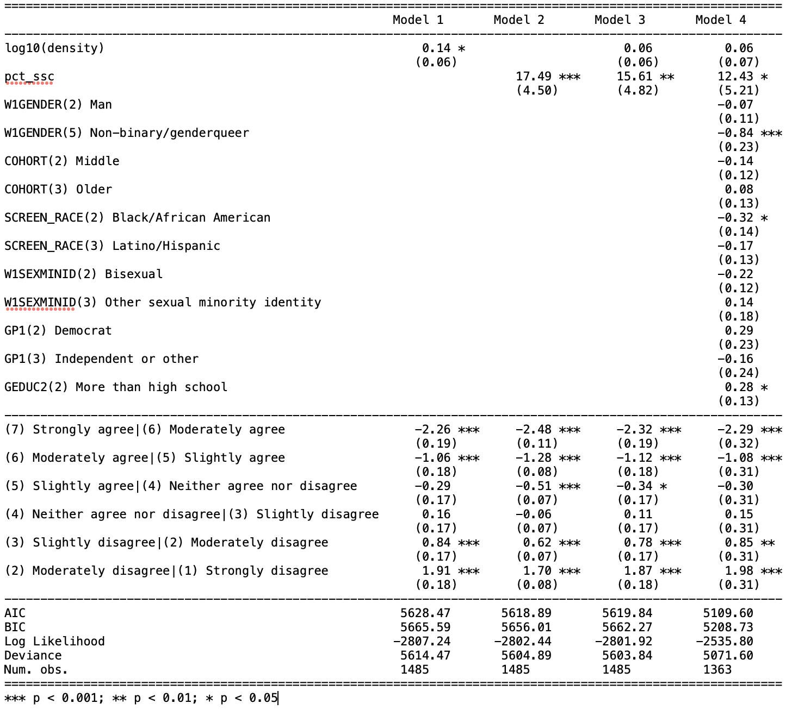

| Median | Mean | Std. dev. | |
|---|---|---|---|
| Zip codes in the Generations study (N = 1,238) | |||
| Population density (individuals/sq. km) | 1,000 | 2,500 | 5,200 |
| Percent same-sex couple households | 0.8% | 1.1% | 1.1% |
| MSAs in the Generations study (N = 217) | |||
| Weighted population density (individuals/sq. km) | 1,200 | 2,050 | 2,540 |
| Percent same-sex couple households | 0.9% | 0.88% | 0.23% |
| Source: 5-year American Community Survey, 2019 | |||
| Note: Characteristics for zip codes and metropolitan areas represented in the Generations study. Values are rounded to maintain privacy. Values are weighted by number of respondents, meaning that these are the values experienced by the average respondent. | |||
2 Density and abundance
How place characteristics shape individual sense of community for LGBQ people
2.1 Introduction
For a community to exist, people have to feel that one exists, and that they’re a part of it. How do they come to feel that way? This chapter investigates one aspect of that process, by using nationally-representative survey data from LGBQ people in the United States to assess how contextual characteristics of places are associated with individual experiences of sense of community and belonging. I identify two key place-based elements that might contribute toward creating a sense of community around LGBTQ identity, namely density and minority abundance.
Community itself is a meso-level social entity that comes into existence through the overlap of social interactional density and shared cultural or moral density (i.e. group styles, embodied habitus, values). Geographical proximity – what Durkheim called physical density (Durkheim [1912] 2001; Tavory 2016) – often facilitates the emergence of this collective entity, but it isn’t intrinsically essential. But if community is a collective and sociological construct, sense of community is more of a psychological and individual one – the personal experience of belonging to a larger collective entity. (Which, unless we want to contend that people are delusional, implies the existence of that social entity.)
The motivation for this work, then, is the fact that an individual’s sense of community is shaped by structural features of the contexts in which they are embedded (Boessen et al. 2014). Purely virtual and distributed communities (Driskell and Lyon 2002) aside, experiences of community are typically local and emplaced (Brint 2001). At the broadest level, then, place characteristics might shape how and whether individuals experience a strong sense of community. Place characteristics most obviously matter for place attachment; but they also matter for other objects of belonging, like identity-based groups.
LGBTQ people provide a particularly interesting case to study the strength of community. For marginalized and minority groups, the stakes of belonging are heightened in light of a history of stigma and exclusion; the place characteristics that matter might differ from those that facilitate community for the generic, unmarked majority (see Zerubavel 2018 for a discussion of markedness). For instance, whether homogeneity lead to a feeling of cohesion, or whether it is instead stifling, depends on who a person is. Because LGBTQ experiences of community have the potential to be unique, I’m interested in what those experiences might reveal about the relationship between place and community. Moreover, LGBTQ attachments to community are already known to be emplaced, both through the existence of archetypical institutions like gay bars (Mattson 2020) and gayborhoods (Ghaziani 2014) as well as through broader and more diffuse constellations of significant places (Gieseking 2020). By linking features of places to individual LGBQ experiences, I aim to uncover the conditions that facilitate sense of community.
My broad research question, then, is what features of individuals and places are associated with individual sense of community for LGBTQ people? I focus on the role of two place characteristics in particular: overall population density, and the prevalence or abundance of LGBTQ people (using same-sex couples as a proxy measure). Specifically, do dense places full of LGBTQ people (and institutions) facilitate a greater sense of connection to the LGBTQ community? Or, conversely, are those exactly the places where LGBTQ community fades into the background? To preview my results, I ultimately find more support for the former hypothesis, with moderate, mixed evidence for density mattering for community in a positive way, and strong evidence for the prevalence of LGBTQ people mattering in the same way. Of course, this analysis only uncovers statistical associations from observational data rather than causal relations, focusing on relatively durable place characteristics and controlling for relatively fixed or seldom-changing individual traits (neither of which are great candidates for observational causal inference).
A note on terminology before I proceed – the alphabet is complicated. The Generations survey (Meyer 2020) purports to be a study of LGB people, but it also includes people with other sexual minority identities. It asks these LGBQ respondents about LGBT community – i.e., trans people are included in the imagined community, even though they are not among those screened into this survey. It might be analytically convenient if the bounds of identity inclusion represented in these acronyms were consistent, but that’s not how LGBTQIA+ identities, communities, and discourse work. I would interpret the survey questions as gesturing toward an expansive and inclusive imagined LGBTQ community, and I will write about LGBTQ community or queer community when I mean to speak generally rather than about the specific questions or respondents.
2.2 Background
My baseline expectation is that a dense place-based context with an abundance of queer people and institutions will facilitate a correspondingly strong sense of belonging and connectedness to the LGBTQ community for individual survey respondents, with ancillary spillover benefits for belonging and wellbeing overall. By density, I simply mean physical density of people; since Durkheim, sociologists recognized that this physical density facilitates a social density of interactions (Durkheim [1912] 2001; Tavory 2016). Moreover, cities are historically entwined with the formation of collective LGBTQ identity (D’Emilio 1992), so much so that LGBTQ studies has been critiqued for its metronormative emphasis (Halberstam 2005). A main mechanism for density to contribute to a sense of community for LGBTQ people is movement; this stereotypical story of the attractive force of gay urban life (D’Emilio 1992) has also been called the “great gay migration” (Weston 1995). This means that the prevalence or abundance of LGBTQ pople is likely to be a specific draw that also positively contributes to experiences of community, especially given that most LGBTQ people do not necessarily grow up around many other queer people or with access to queer spaces. In any case, it’s easy to imagine concentrations of LGBTQ life as an attractive force, leading queer people to concentrate around each other and to individually experience a greater sense of community as a result.
More broadly, however, the case for cities as sites of community is more ambivalent. Though some have advocated for cities as enablers of collective life (Jacobs 1961), classic sociological work instead sees urban life as facilitating either individualism (Simmel [1903] 1971) and the substitution of Gemeinschaft for Gesellschaft (Tönnies [1887] 2001). Queer urban migration may fit into the broader social process of what’s been called the “big sort” (Bishop 2009), where people have self-selected into geographic regions according to values, lifestyles, and other factors. If those that remain in less-dense places with fewer LGBTQ people are also self-selected in this same way, then that might lessen the differences between rural and urban LGBTQ people according to geographic context.
The qualitative literature on LGBTQ collectivities additionally hints at some alternative possibilities. Perhaps individuals’ perceived sense of belonging and connectedness to the LGBTQ community does not correlate with – or even runs counter to – the abundance, density, and diversity of LGBTQ people and institutions in a place. If that were the case, that would suggest that the perceptual experience of community might stand in and symbolically substitute for structural and demographic “facts on the ground,” rather than complementing or arising from them. In other words, maybe a place like San Francisco winds up being like Brown-Saracino (2017)’s Ithaca, and “ambient community” there takes the place of LGBTQ community specifically. Winer (2020)’s related key finding of “solidarity with disdain” might have place-based limitations as well – his interviewees, after all, come only from Southern California. In smaller and more scattered contexts LGBTQ people might not be able to afford to symbolically distance themselves from the imagined center of the gay community the way Winer’s respondents frequently do. Finally, Forstie (2020)’s study of LGBTQ communities in small cities raises the possibility that those LGBTQ communities might in fact be less fragmented and more cohesive, especially across lines of difference, compared to communities in larger cities.
The data sources I’ll combine allow me a unique opportunity to evaluate theories from this qualitative literature, by complementing their depth with breadth and scale. For instance, while Brown-Saracino (2017) gains analytic leverage by looking at places that are very similar to each other on the surface and exploring their differences, she can’t explore the full space of places where LGBTQ people live and where they might experience community (or not). But the three kinds of place-based identities she uncovers can be mapped onto community connectedness measures like those in the Generations study. In her language, “hybrid identities” and traditional lesbian communities would both be consistent with a strong sense of belonging to the LGBTQ community. By contrast, “ambient community” would be signaled by high belonging in general but low LGBTQ-connectedness specifically. Thus, those sense-of-community survey measures have the potential to be informative even though they can’t distinguish what, exactly, “LGBTQ community” means in a given place or what precise forms it takes. (While the Generations survey asks about connections to “the LGBT community,” actual LGBTQ communities are often multiple or fragmented.)
One of the challenges of studying experiences of community is the slipperiness of the referent – what, in a given case, is “the community”? A second important challenge is to distinguish community from related concepts like identity, even when a community might be based on a particular social identity. One of the unique aspects of the Generations survey is that it actually captures (some of) this complexity. Most importantly, it asks respondents about their connection and belonging to any community and to LGBTQ community specifically. It also includes separate questions about LGBTQ community and identity, which matters because community connectedness is not the same construct as identity salience, although the two are presumably related. I use the two distinct measures of community connectedness as my primary outcomes and include individual characteristics (including sexual orientation, gender identity, race, age) alongside my key place-based measures as covariates that capture potentially-salient sources of variation.
Of course, the two factors of density and abundance aren’t exhaustive of spatial characteristics that might matter for community. Material resources and institutions – especially the presence and concentrations of third places like bars and coffee shops (Oldenburg 1998) – no doubt could positively contribute to a sense of community as well. Queer anchor institutions (ghaziani_measuring_2014?), however, are likely to coincide with the presence of same-sex couples. In addition, structural and demographic characteristics have the drawback of being overly broad, in that they don’t capture the specificity of a particular place (Gieryn 2000) – which might be more or less conducive to community. This remainder can be conceptualized as place-based culture (Brown-Saracino 2017). Place narratives might even mediate the relation between structural features and individual experiences of community; indeed, ethnographers say these stories matter (Brown-Saracino 2017; Orne 2017), that they’re part of how community plays out differently in practice even in places that appear similar on the surface. I’m unable to address those fundamental limitations in this chapter; the geographic characteristics I analyze here can only measure the background context in which individual social worlds take place.
2.3 Data and methods
The contribution of this chapter is to analyze the association between place characteristics from the ACS (at the ZCTA and MSA levels) with individual survey responses about community and belonging in wave 1 of the Generations study.
The key data source for this chapter is the Generations study (Meyer 2020), a three-wave representative panel survey of three age cohorts of cisgender Black, white, and Latinx lesbian, gay, bisexual, and queer and other nonheterosexual (LGBQ) people in the United States. The publicly-available version of the data set includes multiple measures of sense of community and belonging as parts of two composite scales: a generic Social Wellbeing scale and an LGBT-specific Community Connectedness scale. The public data, however, do not include geographic location beyond urban/rural and Census region. The restricted portion of the data set records respondent locations at more granular geographies: state, metropolitan/micropolitan statistical area, and finally zip code. To maintain respondent privacy, these restricted data are held by the Inter-university Consortium for Political and Social Research (ICPSR) at the University of Michigan and accessed through a secure virtual environment, with a data use agreement to maintain confidentiality. (One key provision of this agreement: I cannot disclose which geographic locations are actually observed in the Generations data, although I present summary statistics below.) The University of Washington IRB approved the use of the restricted data for this study.
I use four measures from wave 1 of the Generations study - both the two full scales and the first single item from each - as outcome variables to represent community and belonging. The multi-item scales are validated and robust. By contrast, single items from those scales are framed to more precisely target belonging. While it’s important to justify deviations from standard, validated scales (Mustillo, Lizardo, and McVeigh 2018), it’s also important not to over-project meaning onto latent constructs derived from survey measures or take those meanings for granted (Martin and Lembo 2020, 2021). As a compromise, I analyze both and discuss any noteworthy divergences below. These are the scales and items I analyze:
- The LGBT Community Connectedness scale, a 4-point scale constructed from an average of 7 items, previously validated as a cognitive/affective construct in Frost and Meyer (2012). Items touch on emotional attachment, participation, and political and collective action within “the” (singular) LGBT community.
- The Social Wellbeing scale, a 7-point scale constructed from an average of 15 items. This scale includes not only items that ask about respondents’ relations to community, but also to society and the world more broadly.
- The first item on the Community Connectedness scale, “You feel you’re a part of the LGBT community,” with four response options ranging from “Agree strongly” to “Disagree strongly.”
- The first item on the Social Wellbeing scale, “I don’t feel I belong to anything I’d call a community,” with seven response options ranging from “Strongly disagree” to “Strongly agree.” (Strongly disagree with this negative statement corresponds in direction to agree strongly on the LGBT Community Connnectedness question, so I align my model results and figures accordingly.)
For place-based data, I draw on the US Census Bureau’s American Community Survey [CITE] via the tidycensus package [CITE]. At the smallest levels of geography, only pooled 5-year ACS estimates are available. I use the 2019 estimates (from 2015-2019), which overlap with wave 1 of the Generations survey (2017-2018) and also have the highest-quality same-sex couples data. I uploaded relevant covariates, for all ZCTAs and MSAs, to ICPSR’s virtual data enclave, and then joined and filtered them to only the zip codes and MSAs from which respondents in the Generations study were sampled.
In this paper, I consider two focal place-based covariates from the ACS: population density and prevalence of same-sex couples. I analyze these place variables at two geographic levels available in the restricted Generations data - ZCTA and MSA. At the MSA level, I use population-weighted densities aggregated up from the zip code level, to account for the fact that MSA boundaries - derived from counties - vary hugely across different regions of the country [CITE: geographers who say using MSA population density is bad]. I focus primarily on results at the zip-code level, which turn out to be more substantively and statistically significant.
In my statistical models, I test four different functional specifications of the association between population density and community/belonging:
- Linear. The most straightforward specification, allowing me to detect whether denser places are associated with a stronger or weaker experience of community.
- Quadratic. A theoretically-informed extension of the linear specification. This allows for the possibility, discussed above, that both rural small towns and large urban environments are more conducive to community and belonging than suburban sprawl.
- Logarithmic. A data-driven transformation, because the distribution of ZCTA population densities is right-skewed. Taking the (base-10) log produces a more normal distribution of the variable. (Because of this same skew, I present plots involving population density on a log scale below.) Like the linear specification, the log transformation can only be monotonically increasing or decreasing.
- Spline. Agnostic and flexible, using a generalized additive model (GAM) to learn a potentially nonlinear functional form from the data.
As I’ll show below, while the more complex specifications sound plausible, there’s no evidence to support their use.
I use only one specification for the prevalence/abundance of LGBTQ+ people: the proportion of households that are same-sex couples. There are no fine-grained geographic estimates of LGBTQ+ identity (and based on Census Bureau trends, there never will be), so partnered households are the best proxy. I considered instead using counts of same-sex couples, as well as total population counts, rather than constructing two variables that are essentially rates. (Note: Because I pull same-sex couple counts and household counts from separate ACS tables, a few zip codes have nonsensical or extreme values for percent same-sex couples, which I drop from summary statistics. These are zip codes with small populations and/or high proportions of residents in group quarters.) It’s an open question whether the proportion or count of same-sex couples is theoretically more important, but this alternate (and potentially simpler) specification did not turn out be especially promising, so I did not explore it systematically.
I control for a set of individual demographic, socioeconomic, and other identity-based characteristics from the Generations data: gender (cisgender women, cisgender men, and [some] nonbinary/genderqueer people; transgender potential respondents took the parallel TransPop survey, not the Generations survey), sexual orientation (lesbian/gay, bisexual, queer/other), age cohort (younger, middle, older), race (white, Black/African American, Latino/Hispanic), political affiliation (Republican, Democrat, independent/other), and education (high school or less, more than high school). Some of these traits are associated with community and belonging in interesting ways I won’t discuss in this paper. Individual covariates can be analyzed with the publicly available version of the Generations data set, and so they’re peripheral to my central aim of analyzing the restricted geographic data. (Most notably - and unsurprisingly - the small minority of LGBQ Republicans report low LGBT community connectness and belonging. This finding was previously reported in a bivariate analysis [CITE], but my results show that it holds up in the presence of other controls.) Others of these controls aren’t associated with one or another of the outcomes, but I retain them for consistency across models.
Beyond potentially being associated with community/belonging, these individual traits vary spatially. Race is of course central to the spatial demography of the United States, and political affiliation is markedly geographically structured as well (both regional and urban/rural divides).In terms of gender and sexuality, gay men are more likely than lesbian women to concentrate in urban centers [CITE]. Education level affects opportunities to relocate, and respondents of different ages may be at different points in their life course that affect where they choose to live (e.g., younger respondents in cities, older respondents in suburbs).
The marginal effects plots I show below present predicted values and predicted probabilities with the individual controls set at their reference categories: young white lesbian Republican women with a high school education or less. Of course, reference categories are political and theoretically important [CITE: Sasha], but the choice of reference categories does not affect my main results. (Most notably, “white” and “Republican” both shift the level of LGBT belonging and connectedness downward compared to Black/Latinx or Democrat/independent, but they do not alter the interpretations of the place covariates.)
With 4 outcomes, 2 geographic levels, and 4 functional specifications of density, my main results consist of a series of 32 statistical models – although many of these models turn out to be uninformative. I model the multi-item scale outcomes (which can take fractional values) with linear regressions, and the single-item outcomes with ordered logistic regressions. For the spline functional specification of population density, I use GAM extensions of both model types (from the mgcv package [CITE]). As a robustness check for the multi-item scale outcomes, I test two additional varying-intercept multilevel models grouped at the MSA level. This is not a fruitful approach, but if it had been, it would have been appropriate to recast many of the other models as multilevel models.
2.4 Results
First, I’ll describe the distributions of the relevant variables, to contextualize the main statistical models that follow. Table 2.1 shows that the typical Generations respondent (47.2%) agrees that they feel a part of the LGBT community, and this corresponds closely to the overall 7-item average of 2.97 on the Community Connectedness scale. The scale is flipped, so that higher numbers represent greater connectedness, and a respondent who agrees with every item would receive a score of 3. Consistent with the LGBT-specific trend, respondents tend on average to disagree with the notion that they don’t belong to any community, and this aligns with the 4.67 average response for the 15-item Social Wellbeing scale (again, aligned so that higher values represent more positive outcomes). All four measures point to a moderately positive sense of community and belonging on average, but with enough variability to attempt to model systematic differences among respondents and the places in which they live.
Table 2.1: Outcomes
| N | % | |
|---|---|---|
| You feel you're a part of the LGBT community. | ||
| Agree strongly | 239 | 17.4% |
| Agree | 649 | 47.2% |
| Disagree | 389 | 28.3% |
| Disagree strongly | 99 | 7.2% |
| I don't feel I belong to anything I'd call a community. | ||
| Strongly disagree | 252 | 18.3% |
| Moderately disagree | 297 | 21.6% |
| Slightly disagree | 227 | 16.5% |
| Neither agree nor disagree | 142 | 10.3% |
| Slightly agree | 198 | 14.4% |
| Moderately agree | 168 | 12.2% |
| Strongly agree | 92 | 6.7% |
| Source: Generations study (Meyer 2020) | ||
| Mean | Std. dev. | |
|---|---|---|
| LGBT Community Connectedness scale (1-4) | 2.97 | 0.56 |
| Social Wellbeing scale (1-7) | 4.67 | 0.91 |
| Source: Generations study (Meyer 2020) | ||
Table 2.2 shows the distributions of the two key place covariates for the zip codes and metropolitan areas represented in the Generations study. Population densities vary widely across zip codes (sample SD = 5,200 individuals per sq. km), and a strong right skew is evident where a tail of zip codes are especially densely populated. The mean respondent lives in a zip code with 2,500 individuals/km2, while the median respondent lives in a zip code with only 1,000 individuals/km2. The population-weighted mean density for all populated zip codes is 1,560 individuals per sq. km, meaning that LGBQ individuals in this representative sample live in zip codes that are on average substantially denser than the American population at large. Same-sex couples are around 1.1% of the households in the average zip code represented in the study, with a slightly lower median (0.8%) and a reasonable amount of variation (SD = 1.1%). As with density, the average is higher than the population-weighted mean for all populated zip codes of roughly 0.75%. (This is shaped by the fact that 54% of populated ZCTAs recorded 0 same-sex couples in the 2015-2019 ACS time period. Because the ACS is not a census and same-sex couples are rare, many of these are not likely to be true zeroes.) On both distributions, especially percentage of same-sex couples, note that MSAs show much less variability than zip codes.
These covariate distributions shape how I model, present, and interpret my results. The distribution of population densities, in particular, informs my decision to display predicted values on a log scale. For interpreting magnitudes, you can anchor on the idea that around half of zip codes are above and below 1,000 individuals per sq. km, and around half are above and below 1% same-sex couple households
Two examples drawn from the full set of zip codes will provide anchor values for those distributions and help contextualize the model results that follow. These are shown in Figure 2.1. (Remember, I can’t discuss which zip codes and MSAs are actually included in the Generations study.) I’ve chosen these examples as quantitative outliers corresponding to culturally significant places, illustrating what a place where 10% or more of households are same-sex couples actually look like.
Zip code 94114 encompasses the Castro, San Francisco’s gayborhood and one of the most prominent gay neighborhoods in the country. 12% of households in the area are same-sex couples. The Castro is in a densely-populated residential part of the city (9,500 individuals per sq. km), and adjacent to the extremely dense downtown core of San Francisco (with densities reaching 20,000 individuals per sq. km). San Francisco is is in turn the densest part of the wider Bay Area, and one of the densest major cities in the country.
Zip codes 92262 and 92264 coincide closely with Palm Springs, a gay resort town in Southern California. 12% and 14% of households are same-sex couples, respectively. However, as the map shows, Palm Springs is far from the most densely-populated part of the Riverside, CA, metropolitan area (population densities are 300 and 150 individuals per sq. km, respectively). In other words, it’s only extreme on one place characteristic, not both dimensions. Overall densities in the area are much lower compared to the Bay Area, and more typical of the country as a whole.
These real places illustrate the plausible upper end of the range for the prevalence and abundance of LGBTQ people, proxied through same-sex couples, and two distinct points on the spectrum of population densities. In the subsequent results, moving from 1% same-sex couples and 1,000 individuals per sq. km to 10% and 10,000 individuals per sq. km is like moving from a typical zip code in the sample to a place like the Castro.

I will now describe those model results, organized as follows. I primarily discuss zip code results, and then briefly touch on metropolitan area results. Within each geographic scale, I describe first the patterns for population density, and second the patterns for percentage same-sex couple households. For each place covariate, I cover the four outcomes – first the combined scales, and second the individual questions. I close by highlighting some individual-level trends for notable sociodemographic characteristics, which are independent of the place-level findings.
At the zip code level, population density shows an association with both scale outcomes, but not with the specific questions about feelings of belonging. Figure 2.2 compares predicted values for four different functional specifications for zip code population density, controlling for percent same-sex couples and individual characteristics and holding these constant at their mean and reference categories respectively. Functional form turns out to matter quite a lot; with ill-fitting specifications, it becomes impossible to estimate any clear association at all. The best-fitting models for LGBT community connectedness and generic social wellbeing have different functional forms from each other. In neither case is there any evidence for non-monotonic relationships (quadratic, spline) between density and community belonging.
Population density has a linear association with LGBT community connectedness (coef here). In terms of predicted values (see top-left panel of Figure 2.2), this means there is little movement in community connectedness at the bottom half of the density distribution (below 1,000 individuals per sq. km), but substantial increases at very high densities. The association between population density and generic social wellbeing is better modeled as logarithmic (the third panel of the bottom row of Figure 2.2) (coef here). An increase from very low densities (< 1 individual per sq. km) to the midpoint is associated with an increase in social wellbeing larger than from 1,000 individuals per sq. km to 10,000 or beyond, meaning that, descriptively, there are diminishing returns at higher densities. Despite being positively associated with both multi-item scales, population density is not associated with responses to either of the two single items alone, no matter the functional specification (coefs, p-values for the best-fitting models for the corresponding scales). I interpret this contrast and speculate on methodological and substantive reasons for it in the discussion.

Across all four outcomes, a higher zip-code-level prevalence of same-sex couples is consistently associated with a greater sense of community and belonging for LGBQ people. As Figure 2.3 shows, a shift from 1% to 10% of households in a zip code being same-sex couples is associated with a quarter-point increase in community connectedness (coef:) and a half-point increase in social wellbeing (coef:). (The two scales have different ranges, so the units are not comparable. All models discussed here use the best-fitting specifications for density and control for individual characteristics.)These strong associations are replicated in the individual question responses. With other characteristics held constant, the ordinal model in Figure 2.4 shows that as the percentage same-sex couples moves from 1% to 10%, the predicted probability of a respondent agreeing strongly with feeling a part of the LGBT community more than doubles from around 15% to 40%. The probability of disagreeing at all falls from 30% to near 10%. Similarly, Figure 2.5 shows that as the percentage moves from 1% to 10%, the predicted probability of a respondent strongly disagreeing with the statement that they do not feel they belong to any community also nearly doubles, to almost 40%. Given that a sense of belonging to LGBT community specifically ought to logically entail belonging to at least one community in general (although individual responses aren’t always consistent), this consistency is to be expected. The overall signal that more same-sex couples in a zip code area are associated with more subjective community for LGBQ people is robust.


By contrast with those clear associations at the zip code level, there is less clear evidence to report at the metropolitan level. Among the combinations of the two covariates and four outcomes, only one association can be estimated sufficiently precisely to be distinguishable from zero. Even weighted for zip code population, MSA-level population density does not have a discernable association with any of the four community-related outcomes, with any functional form. The MSA-level percentage same-sex couple households is only discernably associated with the social wellbeing scale (shown in Figure 2.6), with a 1 percentage point increase associated with around a 0.3 point increase on the scale (stats:). That change is of a similar magnitude to the level of change associated with a larger shift in same-sex couples described for zip codes above, but MSAs show much less variation in same-sex couple prevalence overall. The apparent direction of the coefficient for the generic community belonging item is consistent with the social wellbeing result, but the level of uncertainty is too large to reliably distinguish it from zero. The prevalence of same-sex couples in a metropolitan area is not at all associated with either measure of LGBT-specific community connectedness. As a robustness check, even a completely different approach to capturing differences between MSAs – a simple varying-intercepts model with random effects – doesn’t reveal notable between-MSA variation.

Finally, while not the focus of this chapter, the trends for the individual-level sociodemographic controls are worth noting. The inclusion of the place characteristics in the models doesn’t seem to affect these associations, which makes analyzing these trends a possible avenue for future work using the public version of the Generations data set.
- Gender has no association with feeling a part of the LGBT community or with the LGBT community connectedness scale. However, non-binary respondents are significantly less likely to report belonging to any community and report lower social wellbeing than men or women, all else equal.
- In terms of age, middle and older cohorts both report feeling less a part of the LGBT community and lower community connectedness belonging than the youngest cohort, all else equal. All else equal, there are no cohort differences in generic community belonging or in social wellbeing.
- In terms of race, Black and Latinx respondents report higher LGBT community connectness, including feeling a part of the LGBT community, than white respondents, all else equal. For the generic questions, the direction is reversed: Black respondents are less likely to report belonging to any community than white respondents, and both Black and Latinx respondents report lower social wellbeing overall.
- Among specific sexual minority identities, bisexual respondents report lower feelings of LGBT belonging and connectedness than lesbian/gay respondents, as well as lower social wellbeing overall; differences between lesbian/gay respondents and other sexual minority identities are not detectable.
- As previously noted, the starkest difference in feeling a part of the LGBT community and in LGBT community connectedness overall is for political affiliation. Republicans report much lower LGBT belonging and connectedness than Democrats or independents, all else equal. In terms of generic belonging and wellbeing, the only statistically detectable difference is that LGBQ Democrats report higher overall wellbeing than LGBQ Republicans. Less than 5% of respondents are Republicans, which makes the clear observed differences especially notable.
- Finally, education presents associations in two opposing directions. Respondents with higher levels of education report less LGBT belonging and connectedness but more generic belonging and social wellbeing, all else equal.
2.5 Discussion
Here’s what this means, here’s why it matters, here’s what’s next
density: moderate, not huge. sensitive to functional specification. clear that monotonic increasing, not any more complex relationship. (maybe we expect that? but that’s not what we would necessarily believe for cishet folks. I thought cities were places for rampant individualism and isolation, etc. – in some sense this might be more Durkheim than Tönnies or Simmel. Consistent with a “metronormative” narrative of the historical development of LGBTQ identities, subcultures, communities.)
ssc: pretty strong
no sign of symbolic substitution.
msa: matters less => implications for measurement. can’t completely dismiss inter-regional structural variation. the multilevel modeling results means ideas about measuring between-city variations in culture might not make sense. fewer units = less variability; larger units = less variability. makes estimation really hard.
point about geographic scale. (what would even narrower look like? data limitations are a huge problem to learning anything about relevant local contexts. I’m pessimistic about there ever being enough information.)
if the scales that matter for queer lives are not fucking counties or MSAs but zip codes and neighborhoods, then maybe the Census Bureau is making a mistake by denying us future access to that information. maybe we should give up on learning things.
affluent, educated white gay men … don’t feel a greater sense of belonging. power and privilege don’t get you everything, I guess. (maybe this is where solidarity-with-disdain comes into play?)
race, education: you can see what I’d view as the impact of marginalization/oppression in the generic measures. in both cases you see the opposite
these are very very spatially sorted/segregated/whatever. so could take race, education, political affiliation and measure at the place/context level. again pessimistic about measuring with any precision; initial explorations suggested that would be kind of futile. as a hypothetical it’s still interesting to contemplate.
here’s why dealing with heterogeneity/diversity is hard: 1. correlation is a bitch. 2. defining a good measure is a bitch. (cite the schachter stuff about race and diversity)
taken together, holistically.
(bring back the castro > palm springs > other places comparison from the results.)
future directions
okay, I think I know what’s going on in San Francisco, but what the hell is going on in Ithaca?
so, how do we square this survey with qualitative findings?
as I’d read these questions, they refer to exactly that imagined gay community that Winer characterizes his respondents as referring to. so where’s the disdain?
straightforward (lol), more-is-more.
in some sense, it’s surprising to get such unsurprising findings. even now? I thought queer spaces were over? or all digital? or ephemeral? maybe all that was premature.
in one sense this is resonant with Brown-Saracino: seems like place still matters when you look at it this way, too. (I expected JBS to be more right, but idk!)
a lot unexplained/unknown (R2 is pretty low tbh). (how do responses fit together into frames/schemas? there’s a lot that could be done there.)
bridge: not well suited to assessing variations in what community means (part of why I can’t fully address divergences from JBS, and why I do what I do in the next chapter. this is the limit of what we can do in conventional ways. so now please just let me do something unconventional.)
Huh, guess I didn’t do the nonlinear transform for % ssc but the linear version works well enough that it doesn’t seem like it would matter
You’re gonna ask the obvious question how does this generalize, I’m gonna have the obvious answer of I don’t fucking know, I didn’t study straight people.
2.6 Interpretation
It seemed like population density itself could be positively associated with community connectedness and belonging for LGB people — and it is, in a bivariate model. But that association does not hold up once other factors are taken into account. Other individual and place characteristics that are themselves associated with physical density must mediate that association. And even in the bivariate case, there isn’t a large difference in levels of belonging between the densest and least dense places.
By contrast, the prevalence of other LGBTQ people, as proxied with same-sex couples, is positively associated with community connectedness for LGB people. This remains true even when other factors are controlled for. Places with truly high proportions of same-sex couples are rare, but the models all predict that in these places respondents will report a heightened sense of community connectedness, both to the LGBT community and in general.
This means that the presence of other LGBTQ people specifically matters more than the mere concentration of people in general. (Those two factors are weakly correlated, even at the zip code level.) Given the extent that the environments of the densest urban places differ from suburban and rural locations, it is surprising that density has so little discernable association with sense of community. This is especially surprising given theory that urban life is thought to facilitate a diversity of subcultures [cite: Fischer] and that urban contexts have been key for the historical emergence of LGBTQ subcultures specifically [cite: D’Emilio, Bérubé, Orne, etc.]. But even if cities did in fact facilitate LGBTQ people coming together to form communities in the first place, cross-sectionally it is the current presence of those LGBTQ people, not the density of the place, that is highly important for experiencing a connection to community.
[can just pull stuff from these three paragraphs into my headline findings above]
Individual characteristics, while not the focus of this project, are worth interpreting and contextualizing as well. (Trends for individual-level covariates are identical in models without the two place characteristics, so the incorporation of place-level covariates does not change the interpretation.)
Gender and sexual identity stand out as much for what doesn’t matter as for what does. It is odd and noteworthy that the privileges accorded to cisgender gay men, including their greater representation in and access to institutions like gay bars, etc., do not translate into a greater sense of being part of the LGBT community. Perhaps this is Winer’s solidarity-with-disdain in action. It is less surprising that bi individuals report feeling less a part of the LGBT community than others; well-known phenomena of biphobia and/or bi erasure are likely to be at play here. Finally, while there are no differences between men and women, non-binary individuals experience less belonging only to community in general, not to the LGBT community specifically. It may be that LGBT spaces provide something of a refuge from a world that is otherwise rigidly organized around maintaining a gender binary – even if those spaces are often structured by gender as well. (A gender X sexual identity interaction might be worth investigating to more precisely tackle the question of differences in belonging between gay men, lesbians, and bi people and queer people of all genders.)
The remaining four covariates — age, race, political affiliation, and education — lead to a range of interpretations, from the unsurprising to the puzzling. It is not surprising that the youngest cohort feels more a part of the LGBT community than older cohorts, having come of age with greater societal acceptance, higher queer visibility, and more access to queer spaces (which privilege youth in a variety of ways). Nor is it surprising that political affiliation has such a strong association with LGBT belonging. The overwhelming majority of LGBQ respondents in the survey (and LGBTQ people in general) are Democrats or independents; to the extent that political values shape what the LGBT community is, it makes sense that Republican LGBT people would feel alienated from it. Next, given the realities of sexual racism [cite: Orne, Held, Stacey & Forbes, etc.], and the fact that many queer spaces – from gay bars to entire gay neighborhoods – are structured by whiteness, it would be reasonable to expect that queer people of color would feel less a part of the LGBT community. Actually, however, Black and Latinx respondents report a greater sense of being a part of the LGBT community than white respondents (even though Black respondents report less belonging in general). I don’t have a solid interpretation for this yet. Finally, even though LGBTQ people are more educated on average than their straight, cisgender counterparts [cite: Mittleman], LGBQ people with lower educational attainment report a greater sense of being a part of the LGBT community – but, paradoxically, less belonging overall. I might have thought that higher levels of education might offer more access to community, so I don’t know how to make sense of these opposing trends. Of course, all of these individual covariates have their own correlations with each other, but the associations I’ve investigated so far hold up in bivariate analyses as well.
[in brief pull this stuff up but don’t dwell on what I can’t explain.]
2.7 Next steps
I see two different ways to extend the work I’ve already done: deepen my existing analyses and probe them for robustness, or broaden the scope of the place-based characteristics I incorporate into my models.
For depth and robustness, I might first think more carefully about density. Am I confident that density doesn’t matter? Or am I just not thinking about and operationalizing it the right way? A few concerns:
First, the functional form of the association is potentially at issue. The log transformation is more data-driven than theoretically-driven, though it does capture the association with community connectedness better than a linear relationship. Maybe a quadratic model or something similar would better encode my theoretical expectations.
Second, there’s the issue of scale (i.e., the modifiable areal unit problem). Is zip-code-level the right choice, or are higher-level scales more meaningful? Geographers and urban scholars advise that using MSA-level density per se isn’t a valid choice, because differences in land area between counties (and therefore MSAs) are so stark between different parts of the US (the West and the rest, in particular). But the overall population or overall density people experience in an area might matter on top of or instead of the the local experience in a zip code itself. Population-weighted densities get closer to what the average person experiences; it would be easiest to calculate these MSA-level values (or county-level values?) from zip codes, but feasible to start from tract or block levels instead – even though I don’t know what tracts/blocks respondents actually live in. Of course, any MSA-level variables exclude the minority of respondents living outside MSA/μSA areas.
- Zip codes are, of course, an even weaker (too-large) proxy for neighborhoods than Census tracts, so if neighborhood-level density is what matters, then the lack of granularity in the survey geocoding may obscure the relationship between density and community as well. This is a problem if LGBTQ people systematically are more likely to live in the denser parts of their zip codes. (Looking at a handful of gayborhood examples – 98102/98122 in Seattle, 94114 in San Francisco, and 60657 in Chicago – I do believe that the gayborhoods systematically fall in the denser parts of those zip codes.)
Finally, the range of the data might limit what can be observed about density. One of the challenges using data from the United States is that we don’t observe more than a handful of really dense places. Even a city as dense as Seattle is mostly single-family, detached homes. If the benefits of density for community only take hold at San Francisco or New York-level densities (i.e., “walkable” densities), then they’ll be hard to observe from statistical models of nationally-representative US-based surveys. I had hoped a log transformation might address this, but it appears that it didn’t. It may be that a different operationalization of urbanicity — a “big 4” or “central city” indicator — might be more relevant.
[That last point is useful to extract, but I basically did all these things! Didn’t bother with big four or central city because they didn’t turn up too much in my initial explorations.]
A second way to make this chapter deeper and more robust involves thinking more carefully about the prevalence/abundance of sexual minority people, and how this might relate theoretically and empirically to diversity/heterogeneity. To me, it’s more intuitive that either high numbers or high proportions of LGBTQ people would be beneficial for a sense of belonging to the LGBT community than that integration between same-sex and different-sex couples would have that same kind of effect. At the same time, I don’t want to undersell my finding. Affective attachment to LGBT community might have been independent of or even inversely related to the actual presence of other LGBTQ people; it could have been more of a symbolic than a material phenomenon. Prior research on LGBTQ people in small cities, or on solidarity with disdain in large metro areas, might have predicted a different result than what I actually found. I’m not sure how to go beyond prevalence/abundance and meaningfully account for any added impact of diversity. Empirically, zip-code-level entropy seems highly correlated with minority prevalence (I think that just mathematically how entropy works), and again the conceptual reason that MSA-level integration would have a positive effect on belonging isn’t clear – maybe opposite effects on generic and LGBT-specific belonging, if we’re thinking about assimilation. Other measures of diversity – racial/ethnic diversity, economic integration, etc. – might provide additional signals of a tolerant or welcoming environment, but there may be other ways of getting at those same characteristics. In addition to the conceptual and empirical issues, part of the challenge for me is methodological – I don’t have a clear sense for how measures of entropy and indices of dissimilarity work, exactly, or how it’s reasonable to interpret them.
[yeah, this did not work out. useful to speculate about but I honestly can’t tackle it at all.]
Instead of or in addition to focusing on other ways of understanding the two place covariates I’ve analyzed so far, I might expand the scope of place-based characteristics I include. My key innovation would be to incorporate cultural rather than demographic or physical features of places. This could be as simple as looking at residual variation between places in a multilevel model and chalking up unobserved differences to “culture,” or it could involve an attempt to actually operationalize place-based culture.
My best idea so far for this is to take literally Brown-Saracino’s (2017) qualitative observations about the power of place-based cultural narratives. She notes the affinity and resonance between her interviewees’ stories about the places they live and the more official stories highlighted in travel guides and websites. I could search for and scrape text from those websites and then quantify the prevalence of different themes using a simple topic model. (This would resonate too with the precedent of using gay travel guides to study LGBTQ life.)Once again, the scale at which these narratives might be the most salient is unclear, but the (Census) place or city level seems most promising to start with. To frame this issue, for instance, how relevant are stories about Seattle to LGBTQ people who live in Bellevue or Tacoma?
In a similar vein – given the cultural dimension of politics, and given the importance of political affiliation at the individual level, place-based measures of political climate (e.g., 2016 Trump vote share) seem important to include. As with every place characteristic, there’s a debate to be had about whether the zip code or MSA level is more salient.
[yeah I don’t do these things. I’m more pessimistic now.]
Alongside adding covariates and reevaluating how I operationalize them, I might bring the individual traits further into focus by considering how they interact with place characteristics, as it’s reasonable to think that they would. But, as my covariates and modeling strategies get more complex, I’ll be more and more limited by the number of respondents in the data. Of course, with only 1484 respondents, I don’t observe every zip code in the country; though I do get more than one respondent per location, especially at higher levels of aggregation like MSA. (You could even imagine a spatial model estimating kind of a “risk surface” for belonging, as Jon Wakefield would put it, but that seems unnecessarily complex for little added benefit.) At some point, we’ll have to feel confident that I’ve learned enough for one dissertation chapter, rather than trying every model specification imaginable.
[yeah I don’t think this is possible with the amount of data I have. just admit that. say it would be cool if someone did a bigger survey.]
Measuring place-based cultural narratives is more ambitious than measuring structural and demographic features. To do so, I need geocoded text data that conveys public-facing representations of a place. I can imagine two types of digital data that might contain general place-based narratives. First, official tourism-oriented websites; Brown-Saracino (2017) discusses the parallels between those official stories and the narratives her LBQ respondents personally hold, arguing that they arise from the same broad cultural source. These webpages often take the form of “Visit [place name]”, for instance https://visitseattle.org/ or https://www.visitithaca.com/ – both of which prominently feature LGBTQ themes to highlight their highly visible LGBTQ communities. Systematically searching for and scraping the text from those webpages1 would provide a corpus of narratives about cities, towns and other local regions. A second, more geographically granular option, would be geocoded Wikipedia pages. These are less official, but more organic, and despite important systematic biases still provide critical information about what a place is known for. With either corpus, I can fit topic models to distill common and unique themes, and then use those topic prevalences as covariates in regression models.
[move to end for “ideas for future work” but evaluate critically in light of my findings. this is basically a separate project.]
Future work in this vein might … I go in a different direction … (but it’s related to meaning and culture, so that’s kinda cool.)
2.8 Appendix: Tables
2.8.1 Outcome 1: You feel you’re part of the LGBT community.

2.8.2 Outcome 2: I don’t feel I belong to anything I’d call a community.

I have used web scraping, web crawling, and API-based data collection extensively in prior work; this is one of the unique things I can contribute beyond merely reanalyzing secondary survey data.↩︎